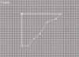
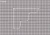
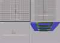
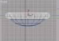
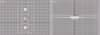
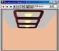

|
|
| 当前位置：电脑报电子版 > 1999 年 > 40 期 > OA专刊 > 3Dmax风光无限——室内效果图制作实例 |
| 《 3Dmax风光无限——室内效果图制作实例 》 |
| 在第38期中，我们在“3Dmax风光无限（上）”部分向大家介绍过了走廊墙面造型及材质编辑，下面再让我们来看看常见吊顶的造型及材质。
酒店走廊吊顶造型 吊顶在室内装潢设计中几乎是必不可少的一项。在近几年装修的建筑中，不仅仅是酒店、商场、公司，甚至在一般的家庭中你都很难看到光秃秃的屋顶挂一盏白炽灯的景象了。所以，吊顶的设计也就成了广大室内建筑装潢设计者的必修课。下面我们就先来练习做一个酒店走廊吊顶造型。 1重新设定系统。 2在顶视图中创建一个方体造型，在创建命令面板上修改其“长度”值为1300，“宽度”值为700，“高度”值为20。我们用这块方板作为屋顶的基础造型。 在屋顶上增加三个灯池的造型。 3单击创建命令面板上的“平面造型”按钮，再单击其下的“线”按钮。 4在前视图中创建如图一所示的平面造型。 5单击命令面板上的“子对象”按钮，将其打开。 6同时选择截面造型斜线上的五个节点，单击鼠标右键，在弹出的菜单中选择“贝塞尔曲线”选项。 7通过调整截面节点的位置和节点调节杆的状态，调整截面造型至如图二所示的形态。 8单击命令面板上的“子对象”按钮，将其关闭。 9单击创建命令面板上的“矩形”按钮，在顶视图中创建一个矩形造型。 10在创建命令面板上，将其“长度”和“宽度”值都设为340，“角半径”值为45。 11单击创建命令面板上的“立体”按钮。 12在其下的“Standard Primitives”窗口中选择“Loft Object”选项。 13单击命令面板上的“放样”按钮。 14单击命令面板上的“存取物体”按钮，再在视图中单击我们前面所做的截面。 视图中生成了放样物体，我们用它来做走廊吊顶的灯池。 15利用键盘上的Shift键和工具行中的“移动”按钮，再复制两个放样物体造型。 16在视图中调整各造型至如图三所示的位置。 下面我们在每个灯池中各放入一盏小吸顶灯。 17单击创建命令面板上的“Loft Object”窗口，在弹出的对话框中选择“Standard Primitives”选项。 18在顶视图中创建一个球体造型，修改命令面板上的“半径”值为50，段数值为16，“半球系数”值为05，勾选“光滑”选项，再点选“切除”选项。 此时视图中的球体显示为半球。 19按住工具行中的“等比缩放”按钮，在弹出的选项菜单中选择“二维缩放”。 20再在弹出的对话框中单击“确定”按钮。 21在工具行中选择“Y”按钮，锁定Y轴方向。 22在前视图中适当压缩半球的高度，效果可参阅图五。 23在顶视图中创建一个圆环。在创建命令面板上，修改圆环“参数”类下“半径1”的值为58，“半径2”的值为8。 24调整圆环的位置，使其正套在半球的顶端，如图四所示。我们用这个半球和圆环组成的造型作为吸顶灯的造型。 25同时选择视图中的半球和圆环，以实例方式再复制两个吸顶灯的造型。 26在视图中调整三个吸顶灯造型至如图五所示的位置。 走廊吊顶材质编辑 酒店走廊吊顶造型到这一步就完成了，下面我们要给它包含的各个基本造型赋上材质。27单击工具行中的“材质编辑器”按钮，在弹出的“Material Editor”对话框中，选择第一个材质示例窗。 28修改“Material Editor”对话框中，“基本参数”类下“漫反射”色块为暗红色，“环境”色块选择比“漫反射”暗的颜色。 29将此材质赋予视图中的三个灯池造型。 下面我们来做灯的材质。 30在“Material Editor”对话框中，选择第二个材质示例窗。 31修改“Material Editor”对话框中“基本参数”类下的“环境”、“漫反射”、“高光”色块全部修改为纯白色。设置“自反光”值为45，“自反光强度”值为20，“自发光”值为100。 32将此材质赋予视图中的三个半球造型。 33在“Material Editor”对话框中，选择第三个材质示例窗。 34修改“Material Editor”对话框中“基本参数”类下“明暗方式”类选项为“Metal”,将“漫反射”色块的颜色修改为金黄色，“环境”色块选择暗黄色。修改“自反光”值为40，“自反光强度”值为100。此时，当前材质显示为黄色金属材质。 下面我们做屋顶的材质。 35在“Material Editor”对话框中，选择第四个材质示例窗。 36在“Material Editor”对话框“基本参数”类下，将“漫反射”色块调整为纯白色。 37将此材质赋予视图中作为屋顶的方体。 38渲染透视图，其效果如图六所示。 39保存此文件为“Topmax”，以备今后调用。 酒店走廊吊顶造型到这时就介绍完毕了，由于篇幅原因，诸多细节还未涉及。虽然造型简单，但作为一种制作方法来学习，还是较有益处的。 |
| 下载本期推荐软件 | 页 首 |
| 《电脑报》版权所有，电脑报网站编辑部设计制作发布 |